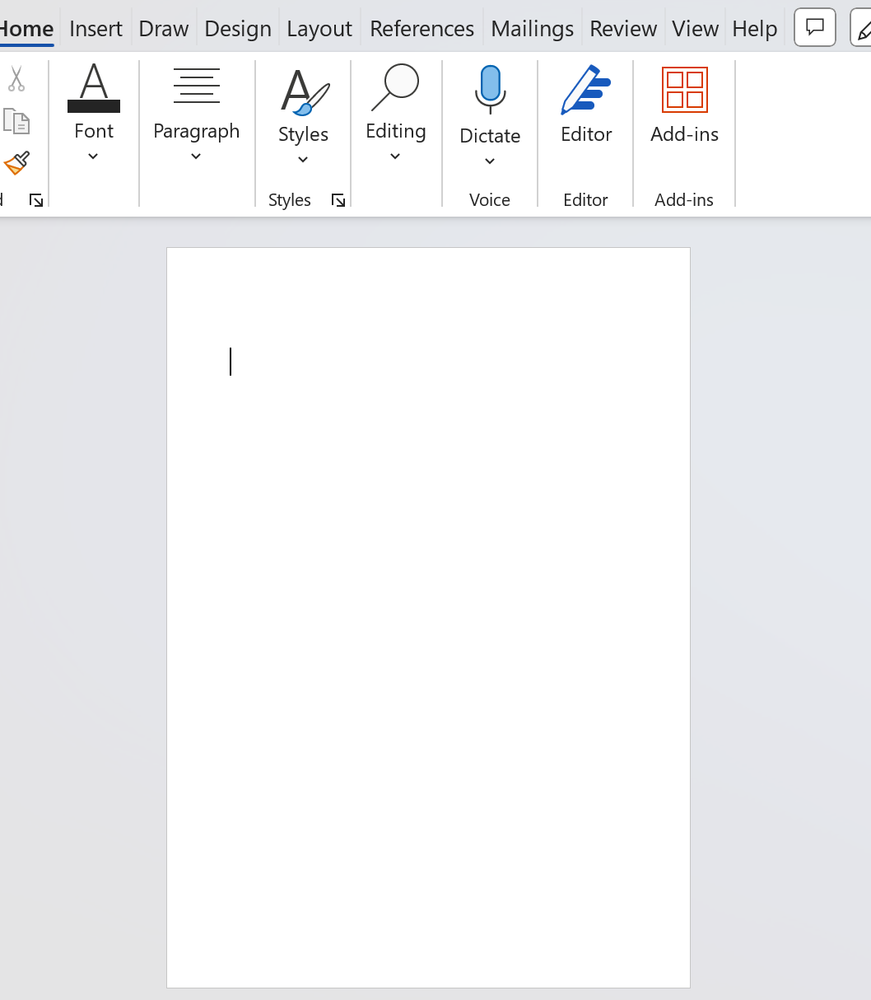
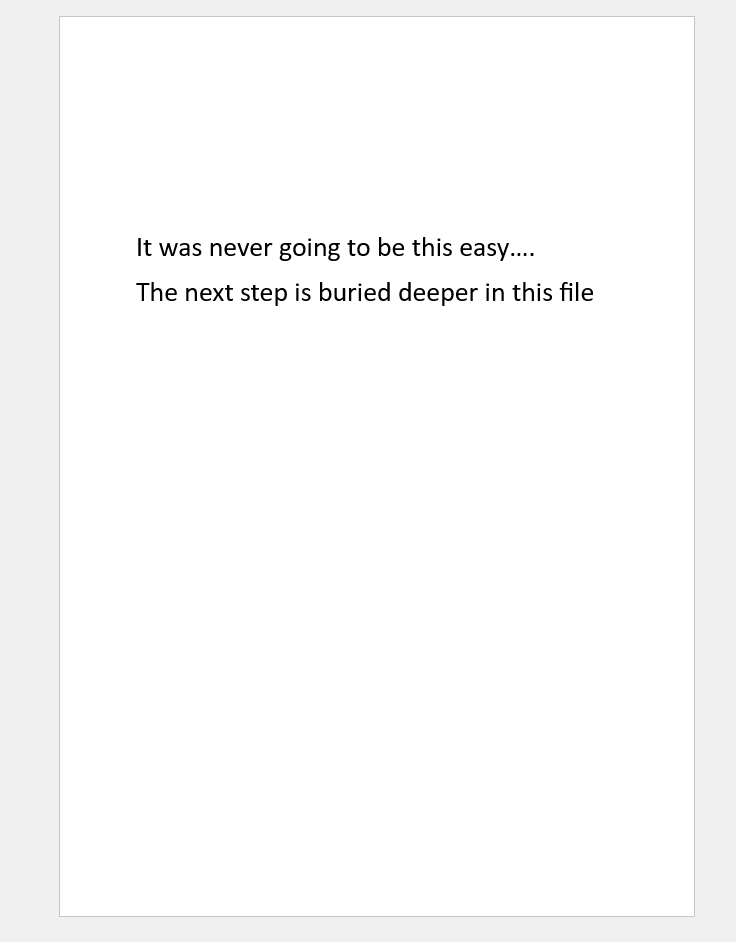
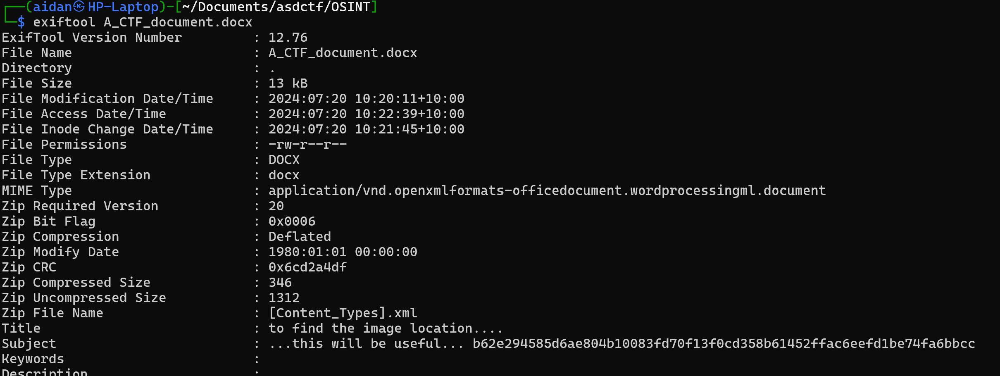
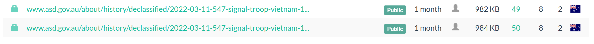
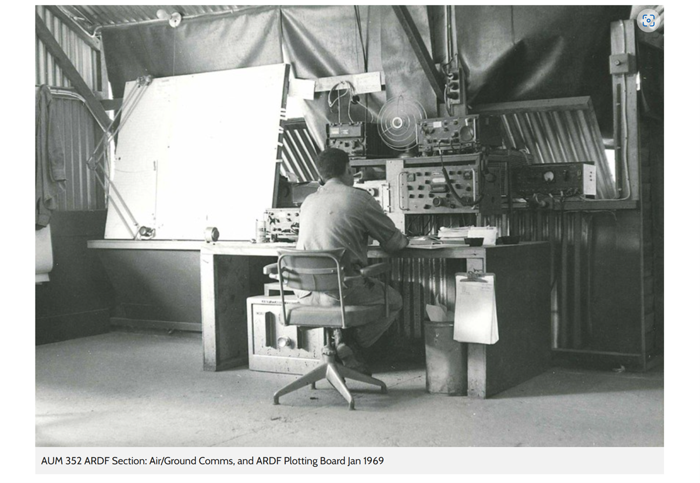

Three Part Challenge
- Blank Doc
- Autonomous
- A Game of Tag
This is the first of three write-ups focusing on a three-part OSINT task. I will discuss the methods and techniques I used to investigate the problems and ultimately uncover the flags.
Part 1 – Blank Doc
Objective
Find the full URL to an image with limited information or context.
Given Information
Contestants were given a link to download a Word document and the following context:
"Pssssst…. You there. I need you to help me locate an image and find out where it is online. We’ll need the full URL of where the image is located. My boss said something about needing to scan that URL later. But here’s the thing – all they gave me was this empty Word document! I’m stuck. You can help me, right?"
Tools and Techniques
To carry out this task, I used the following tools:
- Exiftool
- A word processing application
- A range of free OSINT tools on the internet
- Some savvy research skills
Note: Although I used Exiftool to carry out the task, this could have been achieved without it.
Process
My first step was to view and analyze the provided document. Upon opening the document in Microsoft Word, I was presented with a blank screen. The obvious next step was to see if the document contained any text in white or very small font. I immediately uncovered some hidden text and changed the color to make it human-readable:
 
"It was never going to be this easy…. The next step is buried deeper in this file."
Alas, that would indeed be too easy! The next step was to dig deeper as suggested by the hint. I copied the file into a directory within my WSL Kali Linux instance, then ran Exiftool to find any hidden metadata.

"...this will be useful... b62e294585d6ae804b10083fd70f13f0cd358b61452ffac6eefd1be74fa6bbcc"
And we have liftoff! I discovered what appeared to be a hash hidden in the file’s metadata. At this point, I wasn’t sure if this was a hash of the URL, the target image, or another hint. I proceeded to spend some time searching through any freely available hash database I could find.
After many attempts, I referred back to the challenge’s instructions and saw the words ‘URL’ and ‘scan’ highlighted. After some quick research, I discovered a site called ‘urlscan.io’. Entering the hash into the search field revealed the following result:

Perfect! I immediately attempted to input this URL into the flag field to ensure I left no stone unturned… but no luck as expected. Upon navigating to the site, I was shown the image and copied the image URL. Success, we have captured the first flag for this 3-part challenge!
Findings

The flag was the URL of the image above.
ASDCTF{www.asd.gov.au/sites/default/files/styles/larger_ratio/public/2022-03/history_photos-12.jpg?itok=IFAPuir4}
The image displays a soldier from 547 Signal Troop manning an Air/Ground Command post and Airborne Direction Finding plotting board during the Vietnam war. The photo is very reminiscent of my own time serving at 16th Air Land Regiment (Now just 16th Regiment).